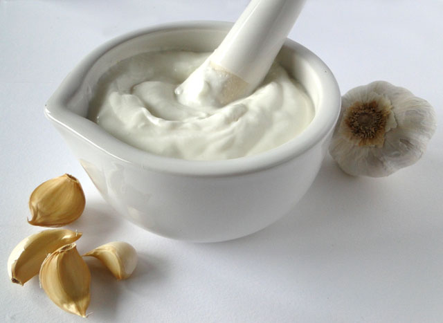
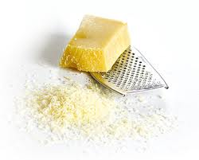
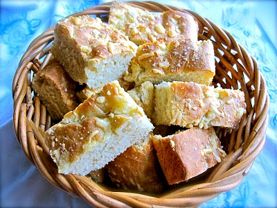
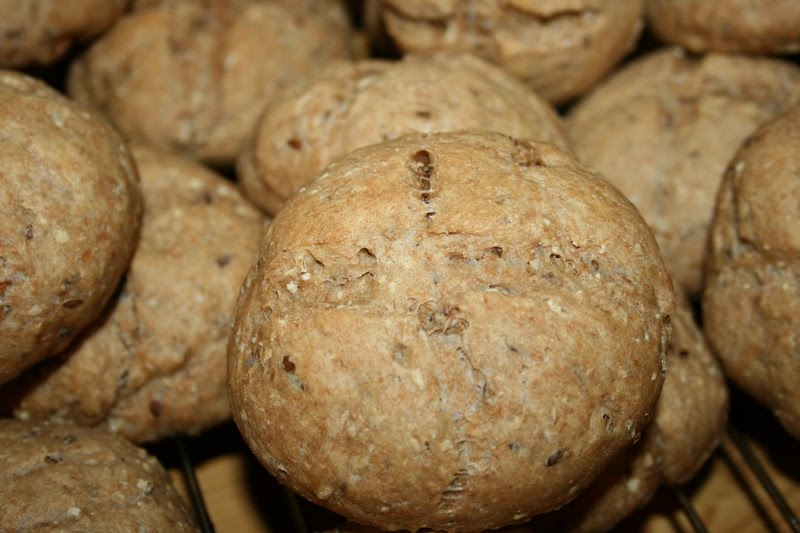

Salater
1. Pastasalat med Kylling
Strimlet kylling med fullkornspasta, paprika, salatblader, olje og sesamfrø.

2. Caesarsalat
Salatblader med bacon, brødkrutonger, strimlet kylling, tomat og rødløk.
Serves med tradisjonell caesardressing.

3. Rekesalat med egg
Marinerte reker med salatblader, agurk, grønn paprika og egg.
4. Gresk salat
Blandet salat, fetaost, sorte hele oliven, rødløk, tomater og brødkrutonger. Serveres med Balsamico.
5. Tunfisksalat med egg
Grønn salat med tunfisk, oliven og egg.
Tilbehør

1. Sprøstekte krutonger

2. Hjemmelagd hvitløksdressing

3. Parmesanost

4. Hjemmelaget Foccacia

5. Grovt rundstykke
Drikke
1. Nypresset Applesinjuice

2. Smoothie med Jordbær og Mango

3. Smoothie med Banan
Dessert

1. Husets proteinpannekaker

2. Deilig vitamin panna cotta

3. Eksotisk frukt-cocktail